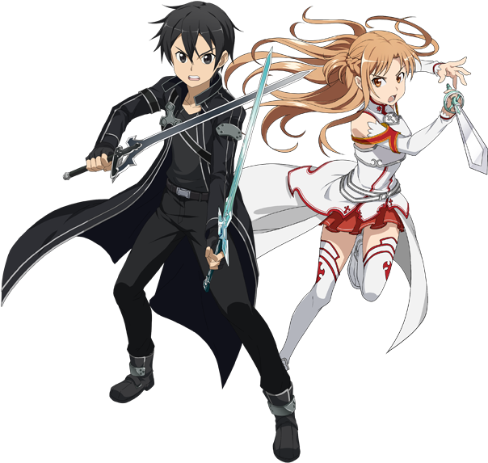

Em um futuro próximo, foi lançado um Jogo de Realidade Virtual em Massa para Múltiplos Jogadores Online (VRMMORPG) chamado Sword Art Online, onde seus jogadores controlam seus personagens com o próprio corpo usando um dispositivo tecnológico chamado: NerveGear. Um dia, os jogadores descobrem que não podem sair do jogo, pois o criador do jogo os mantêm presos a menos que eles cheguem ao 100º andar da Torre e derrotem o Boss final. No entanto, se eles morrerem no jogo, morrerão também na vida real. A luta pela sobrevivência começa agora...
X